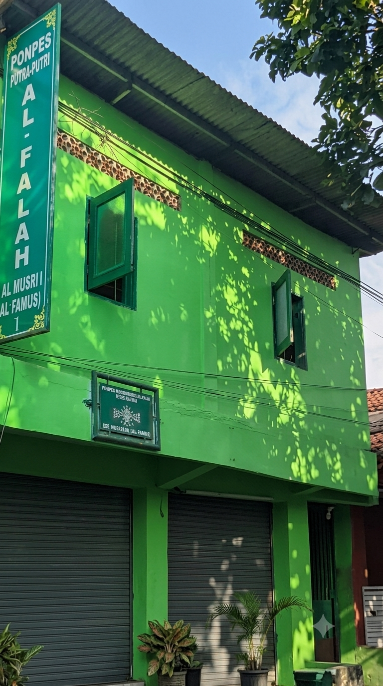
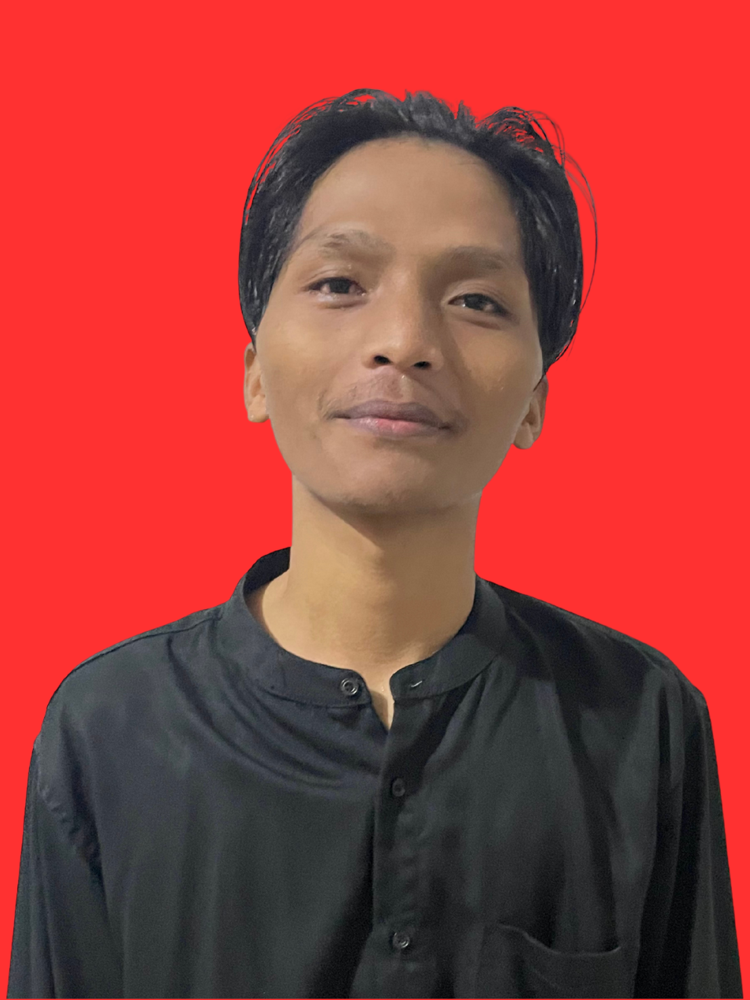
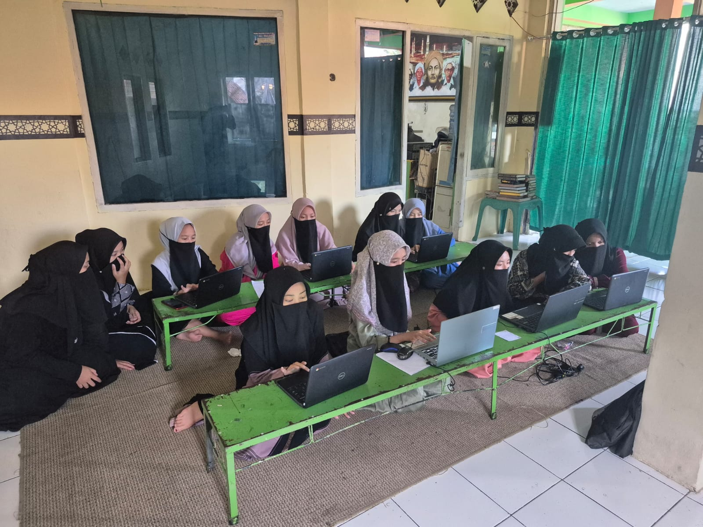
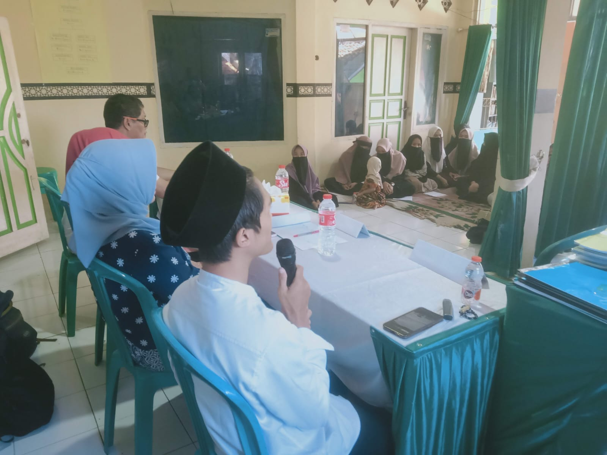
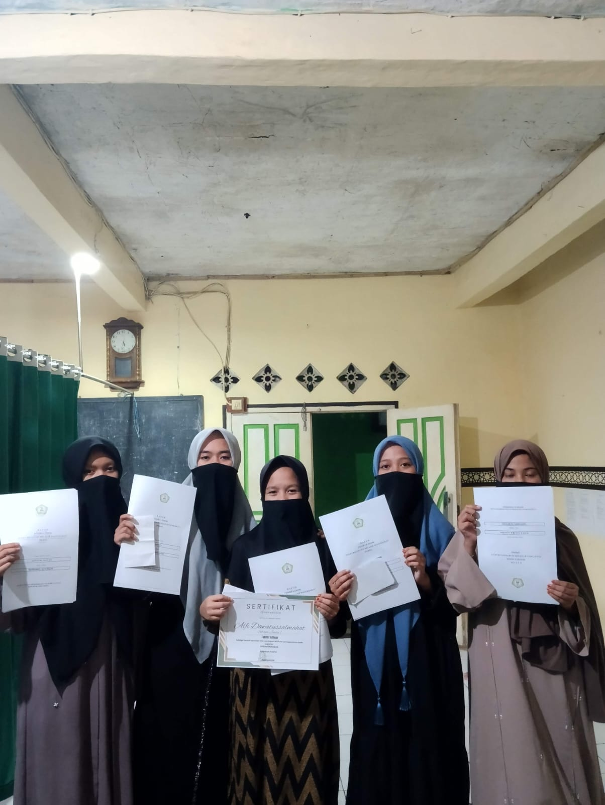

Pondok Pesantren Al-Falah Al-Musri' membina santri melalui pendidikan diniyah, kurikulum Almusri' Pusat berjenjang I'dadiyyah hingga Aliyyah, serta jalur pendidikan kesetaraan formal melalui PKBM Al-Falah Ciranjang.

Santri dibina secara utuh — ilmu agama, akhlak, keterampilan, hingga ijazah resmi negara — melalui program yang berjalan beriringan di bawah naungan Yayasan Al-Falah Al-Musri'.
Kurikulum Almusri' Pusat dengan jenjang berjenjang dari I'dadiyyah hingga Aliyyah, membina santri dalam ilmu agama dan kitab.
Melalui PKBM Al-Falah Ciranjang, santri dapat menempuh Paket A, B, dan C untuk mendapatkan ijazah resmi setara SD, SMP, dan SMA.
Hadroh, kaligrafi, tilawah, bahasa Arab dan Inggris, menjahit, public speaking, hingga kungfu — membekali santri dengan keterampilan hidup.




Kurikulum Almusri' Pusat membina santri melalui 15 cabang ilmu keislaman klasik, dari dasar hingga jenjang lanjut (I'dadiyyah–Aliyyah).
Dulu saya sempat berhenti sekolah karena harus bantu-bantu di rumah. Untungnya ada PKBM Al-Falah di lingkungan pesantren ini, jadi saya bisa lanjut belajar lagi sambil tetap jalanin kesibukan sehari-hari, sampai akhirnya dapat ijazah Paket C.
Tutornya sabar banget, mau jelasin berulang-ulang kalau saya belum paham. Suasana belajarnya juga santai, jadi nggak terasa tegang kayak sekolah formal.
Saya butuh ijazah SMA buat syarat kerja, tapi bingung harus mulai dari mana. Di sini, saya diterima dengan baik dan dibantu sampai benar-benar selesai.
Bergabunglah dalam pembinaan diniyah, kesetaraan, dan akhlak di Al-Falah Al-Musri'.